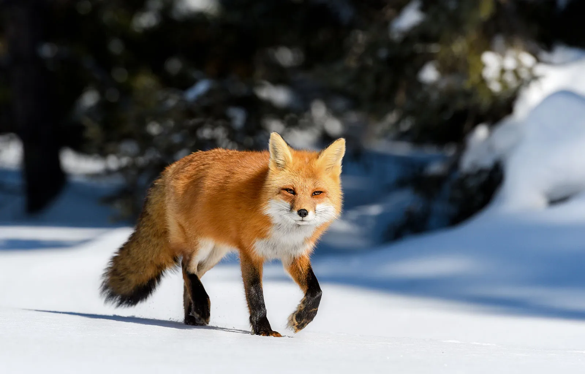
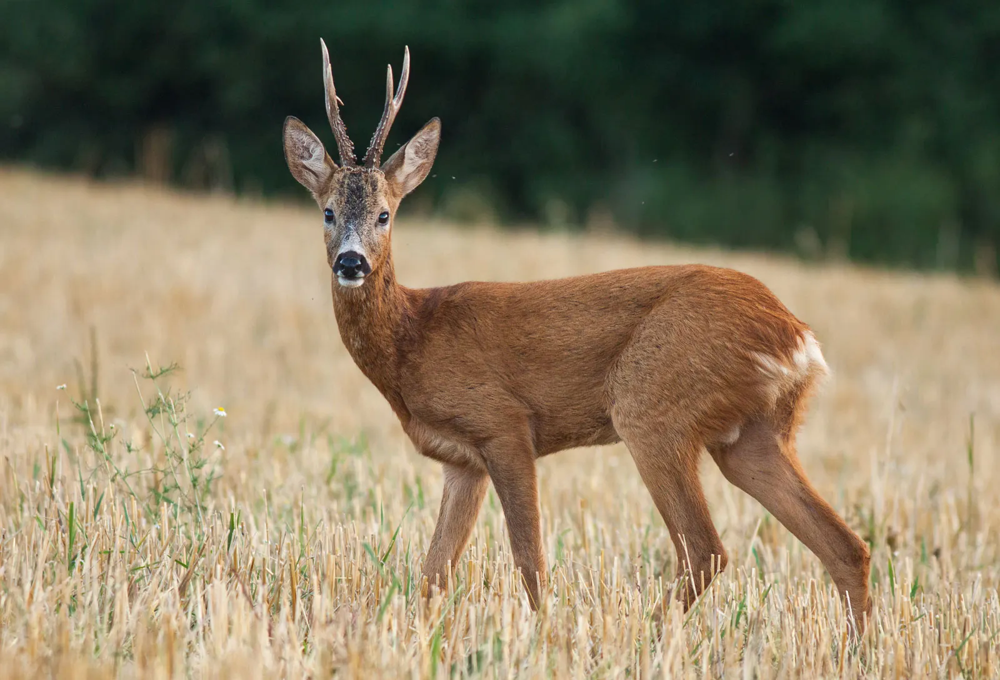
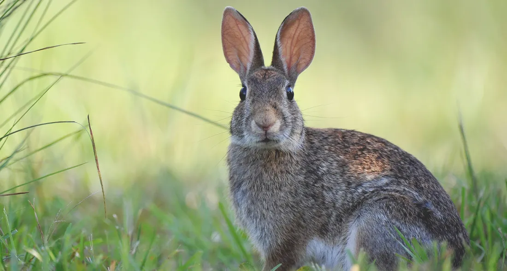

キツネ

園内でいちばん早起きなのが、キツネの「コン」です。 朝の開園前から落ち葉の上を歩き回り、飼育員の足音を聞くと入口まで迎えに来ます。
観察のポイント
夕方になると、木の根元に餌を隠すしぐさが見られます。 耳の向きと尻尾の動きに注目してみてください。
すんでいる場所
入口を入ってすぐ右、大きなクヌギの木の下です。
フクロウ

昼間はたいてい、巣箱の中で丸くなっています。 眠そうに見えても、音にはとても敏感。静かに見守ってあげてください。
観察のポイント
夕方4時ごろ、羽を広げて体をほぐす姿が見られることがあります。 首がよく回るのは、目が動かないからだと言われています。
すんでいる場所
池のほとりの巣箱。水辺のベンチからよく見えます。
シカ

園内の草地で群れています。人懐っこく、柵のそばまで近づいてくることも。 手を伸ばさず、同じ目線で眺めてください。
観察のポイント
角が生え替わる春は、やわらかい毛に包まれた角が見られます。 群れの中での立ち位置にも、それぞれの関係が表れます。
すんでいる場所
園の奥の草地。遊歩道から一周できるようになっています。
ウサギ

こども広場で暮らす3羽のウサギ。名前はそれぞれ「モチ」「ムギ」「ノン」です。 昼寝の時間が長く、耳だけぴょこっと動く姿が人気です。
観察のポイント
鼻をひくひく動かしているときは、まわりの匂いを確かめています。 急に走り出すことがあるので、近づきすぎないようにしましょう。
すんでいる場所
こども広場の小屋。日なたと日陰を行き来しています。